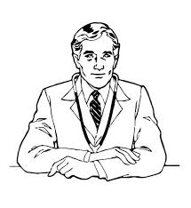

Технології


Про мене

Мене звуть Артутік. У мене є кубики. Вони дерев'яні. У мене дуже багато кубиків. Один, два, три, сорок, тисяча штук.Крім того, я маю ще гарний чотириколісний автомобіль, потім підйомний кран, теж чотириколісний, а ще гвинтівку… без коліс. І слон у мене був, та він помер, бо Грачік одірвав йому голову разом з хоботом.